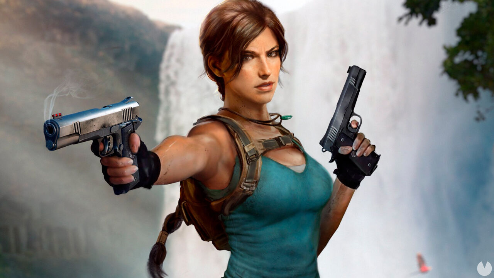

"La arqueóloga que cambió para siempre cómo el mundo ve a las protagonistas de los videojuegos."

Su primer juego fue una revolución absoluta en múltiples frentes: estableció nuevos estándares para la acción en tercera persona, introdujo la narrativa cinematográfica en los videojuegos de acción, y demostró que los entornos 3D podían ser espacios de exploración profunda y satisfactoria. El juego vendió más de 7 millones de copias en su primera entrega y lanzó una franquicia que se extendería durante décadas.
Lara Croft se convirtió en el primer personaje de videojuego en aparecer en la portada de revistas de moda internacionales como Elle y la revista TIME. Fue incluida en el Libro Guinness de los Récords como la heroína virtual más exitosa de la historia del entretenimiento. Su imagen traspasó completamente los límites del mundo gamer para instalarse en la cultura popular global.
Dos películas protagonizadas por Angelina Jolie (2001, 2003) y una trilogía reimaginada en el siglo XXI con Alicia Vikander (2018) confirman su estatus de ícono atemporal. Hoy, Lara Croft sigue siendo un símbolo de fortaleza, inteligencia e independencia, y su influencia se siente en cada protagonista femenina de videojuego que vino después de ella.
" data-en="Lara Croft is much more than a video game character: she is a true cultural icon who fundamentally transformed the digital entertainment industry by demonstrating, conclusively, that a female protagonist could be as powerful, complex, charismatic, and inspiring as any male hero. Created by the Core Design team (led by Toby Gard) and released in 1996 for PlayStation and PC, Lara is a British archaeologist from an aristocratic family who decides to abandon her privileges to explore ancient tombs, solve complex puzzles, and confront enemies in the most remote and dangerous corners of the planet.
Her first game was an absolute revolution on multiple fronts: it established new standards for third-person action, introduced cinematic storytelling into action video games, and proved that 3D environments could be spaces of deep and satisfying exploration. The game sold over 7 million copies in its first installment and launched a franchise that would extend for decades.
Lara Croft became the first video game character to appear on the cover of international fashion magazines such as Elle and TIME magazine. She was included in the Guinness Book of World Records as the most successful virtual heroine in entertainment history. Her image completely transcended the boundaries of the gaming world to establish itself in global popular culture.
Two films starring Angelina Jolie (2001, 2003) and a reimagined trilogy with Alicia Vikander (2018) confirm her timeless icon status. Today, Lara Croft remains a symbol of strength, intelligence, and independence, and her influence is felt in every female video game protagonist who came after her.
">Lara Croft es mucho más que un personaje de videojuego: es un verdadero ícono cultural que transformó de raíz la industria del entretenimiento digital al demostrar, de forma contundente, que una protagonista femenina podía ser tan poderosa, compleja, carismática e inspiradora como cualquier héroe masculino. Creada por el equipo de Core Design (liderado por Toby Gard) y lanzada en 1996 para PlayStation y PC, Lara es una arqueóloga británica proveniente de una familia aristocrática que decide abandonar sus privilegios para explorar tumbas antiguas, resolver acertijos complejos y enfrentarse a enemigos en los rincones más remotos y peligrosos del planeta.
Su primer juego fue una revolución absoluta en múltiples frentes: estableció nuevos estándares para la acción en tercera persona, introdujo la narrativa cinematográfica en los videojuegos de acción, y demostró que los entornos 3D podían ser espacios de exploración profunda y satisfactoria. El juego vendió más de 7 millones de copias en su primera entrega y lanzó una franquicia que se extendería durante décadas.
Lara Croft se convirtió en el primer personaje de videojuego en aparecer en la portada de revistas de moda internacionales como Elle y la revista TIME. Fue incluida en el Libro Guinness de los Récords como la heroína virtual más exitosa de la historia del entretenimiento. Su imagen traspasó completamente los límites del mundo gamer para instalarse en la cultura popular global.
Dos películas protagonizadas por Angelina Jolie (2001, 2003) y una trilogía reimaginada en el siglo XXI con Alicia Vikander (2018) confirman su estatus de ícono atemporal. Hoy, Lara Croft sigue siendo un símbolo de fortaleza, inteligencia e independencia, y su influencia se siente en cada protagonista femenina de videojuego que vino después de ella.
Demostró que una protagonista femenina podía liderar una franquicia de videojuegos de talla mundial, abriendo el camino para todas las que vinieron después.
Primera protagonista de videojuego en aparecer en portadas de revistas de moda internacionales, trascendiendo completamente el mundo gamer.
Sus adaptaciones cinematográficas con Angelina Jolie y Alicia Vikander demostraron el potencial de los videojuegos como base para el cine mainstream.
Reconocida oficialmente como la heroína virtual más exitosa de la historia del entretenimiento, un récord que consolidó su lugar en la historia.